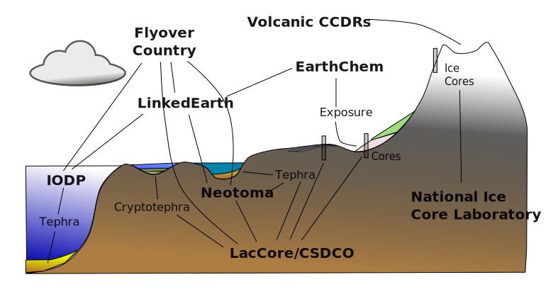

Throughput:
Annotating Scientific Data
Collaborative Proposal
Simon Goring1; Doug Fils2; Eric C. Grimm3; Daisie Huang4; Stephen Kuehn5; Kerstin Lehnert6;Nick McKay7; Amy Myrbo3; Anders Noren3; Steve Richard6; Jack Williams1
1University of Wisconsin - Madison, 2Ocean Leadership, 3University of Minnesota, 4Data Dryad, 5 Concord University,
6Lamont Doherty Earth Observatory, 7Northern Arizona University
Motivation
→ Information entropy ←

User question:
A few of the calibrated chronologies have duplicate ages, for example Tower Lake: > A <- get_download(13047) > A[[1]]$chronologies$PalEON There is an entry for age 7091 ybp twice.
Expert response:
Hi XXXXXXXXX, thanks for getting in touch. In that case the result is fine, but I found an error in one of the other records that I've now corrected. The reason for the duplicate there is that the author counted multiple samples from the same depth.
Science is Cultural

But Data is Shared


Key Elements
- Standards survey & reporting
- Cross-domain data mapping (tephra)
- Secondary data capture - Annotation Engine
Data Standards in the Long Tail
- Many ad hoc databases
- Project-based, few informatics experts
- User-focused - documentation needed
Cross-Domain Discovery

Annotation Engine
Annotations as Objects

Features
W3C Annotations using neo4j
rOpenSci Packages linked to GitHub Repositories